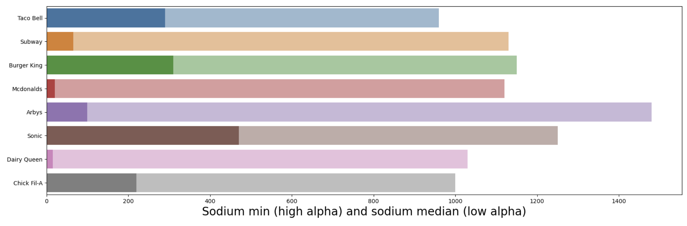
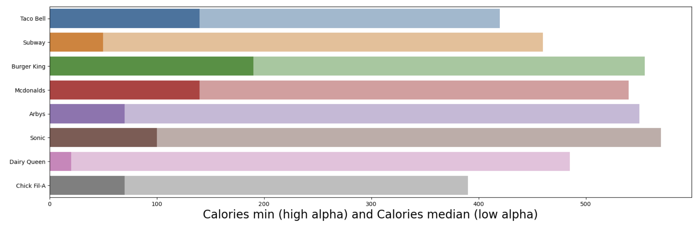
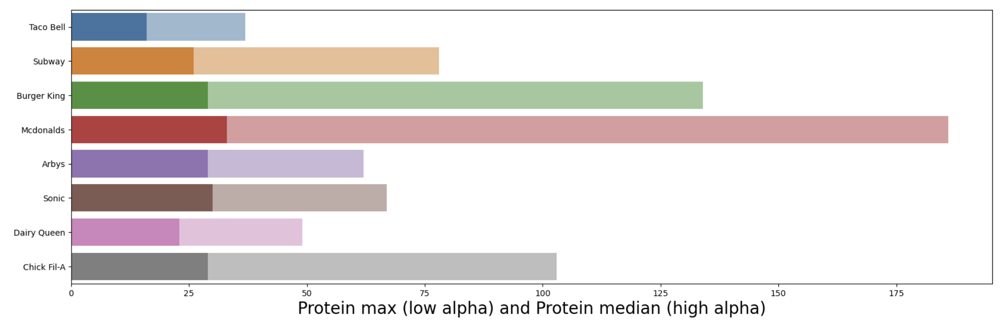
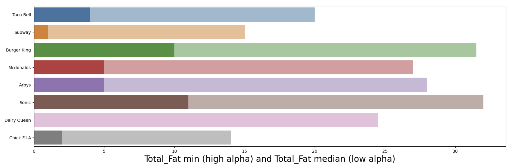

I looked at the nutrition facts of the menu for eight of the most popular fast food chains to determine which ones are the best for a few of the most popular diet types: low calorie, low sodium, high protein, low fat, and low carbs.
There are Thousands upon thousands of fast food restaurants in just the U.S. alone! With all these choices it can be very hard to figure out where to eat and even harder which ones have the best options for you. The graph below shows how many there are (in the U.S.) of each restaurant we will be looking at.
I used a dataset made by openintro.org that contains almost the entire menue
(not including some sides like fries) from eight different fast food chains:
Taco Bell, Subway, Burger King, Mcdonalds, Arby's, Sonic, Dairy Queen, Chick Fil-A.
I also cross-referenced some of the items from the dataset with the nutrition facts from that restaurant's official website to confirm legitamacy.
Taco Bell is the best option for a low sodium diet as it has the lowest median sodium for all of its items at 960 mg, but Dairy Queen has the lowest sodium option of all eight restaurants being it's side salad at 15 mg of sodium.
Chick-Fil-A is the best option for a low calorie diet as it has the lowest median calories for all of its items at 390 cal, but Dairy Queen has the lowest calorie option of all eight restaurants being it's side salad at 20 cal.
McDonalds is hands down the best option for a high protein diet with both the highest median protein count in its items at 33 g and the highest protein count in an item being its 20 piece Buttermilk Crispy Chicken Tenders at a whopping 186 g of protein!
Chick-Fil-A is the best option for a low fat diet as it has the lowest median amount of fat for all of its items at 14 g, but Dairy Queen has the lowest fat option of all eight restaurants being it's side salad at 0 g of fat.
Chick-Fil-A is the best option for a low carbs diet as it has the lowest median carbs for all of its items at 29 g, but Dairy Queen has the lowest carb option of all eight restaurants being it's Regular Cheese Curds at 0 g of carbohydrates.
Here are the bar graphs showing the minimums, maximums, and medians (depending on the diet being examined) for the different restaurants' menus:
 Chick-Fil-A and Dairy Queen seem to be the better options for most of the diet types, except for McDonalds which is far better for a high calorie diet.